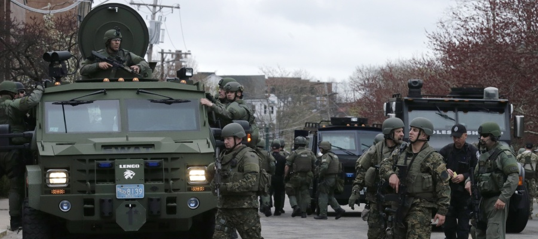
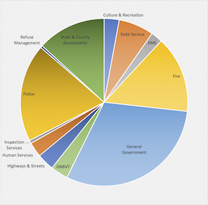

2020-12-13 08:00

Budget: bud-jet; n. A systematic plan for the expenditure of a finite resource, such as money or time.
Part 1 of this series is a quick overview of the City’s 333-page FY2021 New Bedford City budget along with a spreadsheet created from the numbers. In this post we look at department funding and changes from last year’s numbers. Besides the generous funding they receive, and even with a delay in building a new police center, New Bedford Police will be spared the brutal “defunding” that other departments will suffer — even as COVID-19 continues to overwhelm city resources and cash reserves.
Let’s jump right into the revenues. In 2021 the Buttonwood Zoo will bring in $150K less, revenue from traffic tickets will decrease by $200K, building permits will be down by $200K, half a million dollars in investment income are up in smoke, and a quarter of a million dollars of “miscellaneous non-recurring” revenue will be lost. But the most painful loss of all will be $3.9 million of so-called Free Cash revenue lost to the pandemic; this is the money carried over from the preceding fiscal year. It’s all gone now. Consequently, funding for many city departments will be slashed in 2021. But the NBPD is not one of them.
On the Expense side the loss of $4+ million in revenue doesn’t worry City Council enough to stop it from giving themselves a 5% raise while taking away $50K in funding from the Mayor’s office and another $50K from Purchasing. “General Government” — the catch-all budget category for most familiar city services — fares worst of all, losing more than a million dollars in funding.
The Department of Public Safety will also be defunded — that is, all departments but the Police. The projected FY2021 Police Department budget increases ever-so-slightly, but the Fire Department is defunded to the tune of $1 million and EMS services loses $180,000 despite contributing an additional $200K in revenue. This has got to be an especially painful slap in the face for public employees who actually save lives.
While the City spends $50 million a year on “Public Safety” (most of it for the police) it spends only $5 million a year on human services. In 2021 New Bedford will spend slightly more ($1.2 million) on Community Services than it did last year but will slash Health Department funding — even as the pandemic is still raging. You might think of Veterans Services as a federal responsibility, but the City pays more ($2.7 million) for Veterans Services than Community Services and Health combined.
The budget is just full of surprises.
The Zoo and libraries get a tiny boost in 2021, and there is another $35K more for parks and beaches, but funding for tourism and marketing will be slashed by $65K.
Two big changes in City expenses are a $30 million increase in the school budget and a $25 million decrease in Health and Life Insurance. These numbers are related because, in a bookkeeping change, the school budget now reflects healthcare costs. This is not the case with other departments, however.
It would be nice if future budgets would do the same for all departments — reflecting health care costs in their total operating expenses. Future budgets should also reflect pension obligations and the portion of debt maintenance that each department or Enterprise Fund incurs, as well.
The City Council — over-represented by bankers and real estate agents, beneficiaries of patronage, and the Chamber of Commerce — has consistently opposed raising property taxes on City residents but is only happy to cash state checks which fund more than half of all City programs. And when the “free money” or state aid dries up the City has always been quick to borrow. In fact, it’s done so much borrowing over the years that it now pays roughly $12 million in debt service each year to lenders.
Besides the New Bedford Public Schools, the City’s single largest expenditures are $32 million in pension payouts, a similar number for police, $18 million for healthcare, a similar number for Fire, $6 million for running Greater New Bedford Voc, and a similar number for EMS.
Some city services are organized into Enterprise Funds which are somewhat self-supporting. The airport costs about $1 million a year to run, cable access costs about $1.2 million a year, the parking authority $1.2 million, wastewater $25 million a year, and city water $17 million. But these are use-based services which invoice customers instead of levying taxes. Unlike police or general government, Enterprise Funds themselves fund the wages of those who provide their services.
When it comes to police spending, the best estimate of the cost of the 302 officers on the job in 2021 and the infrastructure required to support them is about $32.6 million. This number is derived from the $25,527,814 shown in the budget, plus another $4,235,554 in estimated pension payouts and $2,894,190 in estimated health premiums, for a total of $32,657,558. This is a conservative estimate because police benefits and salaries outstrip everyone else’s and police pensions are much higher. In all likelihood total police costs are much higher than $32.6 million.
So when we look at city budgets we ought to return to the definition of a budget — planning around a finite resource called money — and think about what else we might purchase with all those finite resources.
The cost of the New Bedford Police Department is more than all the tax money the City spends on EMS, highway and street repair, Community Services, Health Services, Veterans Services, Parks and Beaches, Refuse Management, and making interest payments on its debt — combined.
A “budget is a profoundly moral document,” presidential advisor Paul Begala once noted. “For where your treasure is, there will your heart be.”
